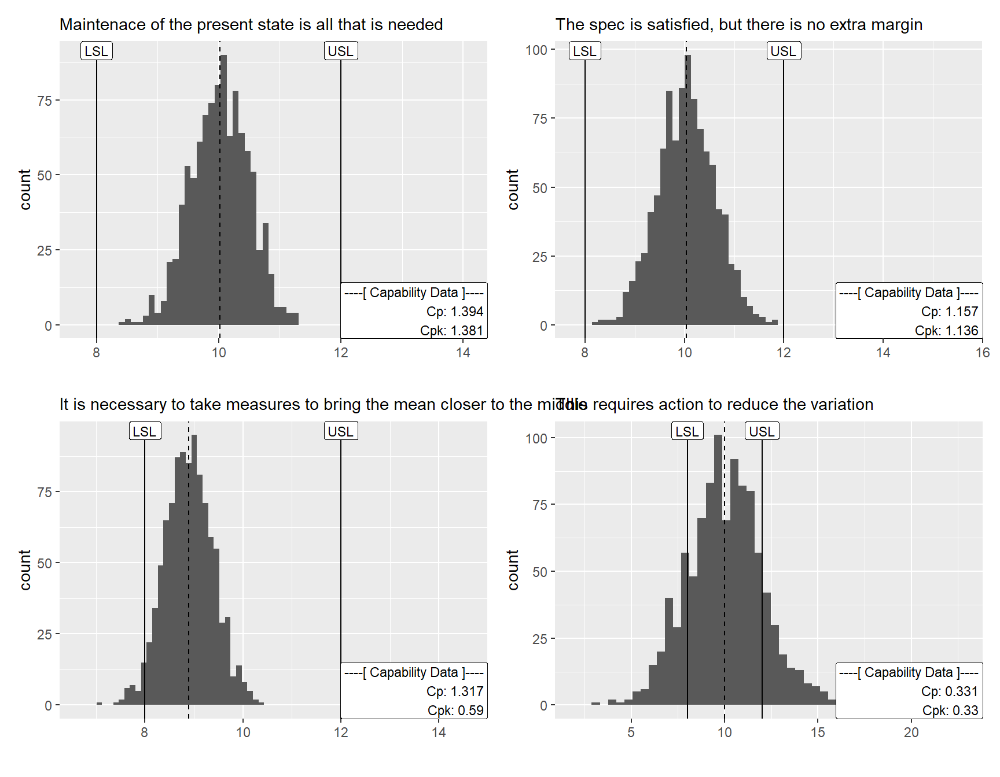

Code
#get stock retursn for GE, RYCEY, SAF.PA, RTX, AIR.PA, BAIn this space, I share some details about research and studies that I have been working on.
CHIPS and Science Act provide $52.7 billion for American semiconductor research, development, manufacturing, and workforce development. This includes $39 billion in manufacturing incentives Hawkins (2024)
Intel has been awarded $8.5 billion in grants and $11 billion on loan guarantees for new chip fab construction under the CHPS Act acording to Manufacturing@MIT (2024). Pat Gelsinger CEO of the company is in 3 years into a turn-around strategy to get back to advanced chip production leadership, and argued the cutbacks were necessary to generate funding for his strategy of building a foundry business to achieve 5 nodes in 4 years. Bad decisions are made along the way such as make gpu chips for AI, adopting advanced lithography, and expand beyond its very profitable x86-based desktop and server chip business. Similar decisions were nade at GE, and were reversed by Larry Culp. What lessons could he provide?
Acording to Manufacturing@MIT (2024), lithium-ion betteries were invented in United States, but never built the needed supply chains, government support was missing, and batteries faced political and industrial opposition.
China that has seized the lead in battery technology, leading battery manufacturing, and making technical progress. The firm A123 was bought for a Chinese company that was transferred its significant technology, then scaled these advances, putting them into domestic hybrid then electric vehicles built with massive government support.
Mujeeb Ijaz founder, CEO of Our next energy Michigan made cells LFP technolgy, R&D Center in Fremont California and another one in Boston and Bedford shows us the 3 gerenation analysis about energy storage at MIT Mobility Initiative (2023)

Yet-Ming Chiang is professor of material science and engineering at MIT co-founder of A123 Systems, co-founder of Form Energy, and co-founder of 24M technologies.
What is the limits of energy storage?
Energy density
He talks about Arpa-e energy gov call for proposals propel 1k that refers to on thousand watt hours per kilogram. Today EV’s is pushing to 250 watt hours per kilogram. So 1K is about planes, trains and ships. To put in perspective the chemistries that we know of today the top and of about 4 kWh/kg and what we are all trying to do is figure it out how to make those usable low cost enough and by the time you get to a system that exceeds what we’re doing today.
Obs: Innolith Switzerland-based company with labs in Germany claims it’s on path to 1000 wh/kg or (1kWh/kg) battery energy density to enable the production of vehicles with 620 miles range(1000 km). Meanwhile, in Japan researchers at Yokohama National University have demonstrated different approach using mananese in the anode to create a high-energy density 820 wh/kg with.
Martin Bazant professor of chemical engineering and mathematics at MIT director of center for battery sustainability, co-founder of Lithios an advanced lithium extraction from brins using electrochemistry.
Chirstina Lampe-Onnerud founder and CEO of Cadenza Innovation. She talk about basic research with the goal to make safe, lowcost and performance just right, systemitized and data truth.
The task here is to research the possibilities in the small and medium manufacturing sector considering the market, historic aspects, and the innovation theory of Bonvillian and Paul Romer.
Manufacturing as a service SendCutSend (2024) and Fussell (2024)
Dev kit’s serving as a catalyts for creativity and scientific discovery when the innovators can quickly test and validate their hypoteses, fostering a culture of experimentation and risk-taking. By providing access to cutting-edge hardware, these kits empower people from diverse backgrounds to angage in hands-on experimentation and prototyping Breaking Taps (2024). This, in turn, enables the rapid iteration and refinement of design concepts, accelerating the journey from idea to reality. As a result, dev kits have become an essential tool for driving innovation, fueling breakthroughs, and pushing the boundaries of what is possIble while creating an environment for exapanding supply chain capabilities and knowledge base lgarlati and Gonzalez (2024)
Solid dosage products still account for the majority of medicinal products made worldwide, but there are some hurdles to overcome in order to make the tablet of the future. Issues such as patient centricity, solubility, bioavailability conversion of parental products to solid dosage forms are all topics that need to be addressed.
Quality, variability, new processes, supply chain, and inspection
Smart pill such as electronic capsule for tageting drug to delivery system.
Jet engine is important part of commerial airplane and reparing them has become a $58 billion business acording to @cnbc2024. A commercial jet engine is a complex, expensive machine made up of thousands of parts and cost of $10 million each one or $6 million for overhaul. The process of overhauling one means disassembling it and replacing all the worn on damaged parts like blades, which can cost up to $20.000 a piece and HPT( high pressure turbine) costing more then $30.000 a piece, and one engine aproximately 40 to 60 of them is necessary. Before the supply chain issues, a typical narrowbody engine took 60 to 75 days to overhaul, and that time has gone up, in some cases to over 200 days because it’s not sufficient spare parts, labor to do this in normal time.
Jet engine manufacturing is dominated by GE Aerospace(12.81%), CFM/Safran(44.77%), Rools-Royce(19.57%) and Pratt & Whitney (22.85%). More than 70% of GE’s commercial engine revenue comes from partes and service, and first two quarters of 2024 GE reported over $15 billion in MRO(maintenance, repair and overhaul) versus $8 billion for new engines.
#get stock retursn for GE, RYCEY, SAF.PA, RTX, AIR.PA, BAIn U.S. there are over three thousand aircraft repair shops, and the most commonly flown jet engine is CFM56 that 80 to 85% part commonality between engines resulting in a very good reuse capability. The engine has parts which are life time limited and the safe operation of the engine is guaranteed up to 25 to 30 thousand cycles. In the hottest part of a jet engine in 2024, the temperature surrounding the turbine blade is several hundred degrees above the melting point of the material of the turbine blade. Aproximately 1200 parts per engine and many stages for overhauling.
Break the major flange and then it’ll be separated into the cold and the hot section.
Broken down into piece and then the parts are cleaned and inspected.
Testing process envolve techniques such as ultrasound, x-ray, magnetic inspection and fluorescent penetrant that is spray parts with a lime green fluorescent penetrant, and it seeps into the surface of the parts and any subsurface defects. They use a black light for the fluorescent to be little more brilliant and help signify where some of those defects are located Hradecky (2011).
Supply chain issues are expected to persist in an a airline manufacturing and MRO shops raising concerns about rising maintenance costs.
In 1990, the United States used to be a global leader in manufacturing, but in 2010, China passed the U.S. going from 3.5% in 1990 to 30.5% in 2021.
Apple and Alphabet hire and send thousands of employees abroad to eversea manufacturing. It was common to send 20,40 engineers at a time to the factory to support prototyping builds to do that learning and finding and fixing of issues and be in the right place at the right time. Apple buying 50 business class seats from San Francisco to Shanghai daily, accounting for $150 million in annual revenue for United Air Lines.
The popular conception is that companies come to China because of low labor cost. I’m not sure what part of China they go to, but the truth is China stopped being the low labor cost country many years ago and that is not the reason to come to China from a supply point of view. The reason is because of the skill and the quantity of skill in one location and the type of skill it is.
— Tim Cook - CEO of Apple
Acording to Helwig and Goldman (2024) , manufacturing is subject to learning effect and making high value-added technology products requires specialized process knowledge and when firms or nations stop producing something, developing that capability again is an uphill battle.
Manufacturing process demand a lot of skill and a lot of local supply chain for where all the parts are going to come from to build such a complex product that makes it a very appealing place to build.
All products of Apple are designed and engineered in US and they all include components manufactured in U.S. (e.g. iPhone glass is made in Kentucky, and lasers that enable Face ID are built in the U.S. too.). In 2023 Apple annouced $430 billion in new investments across the country, including work with more than nine thousand suppliers across all fifty states in U.S. acording CNBC (2022)
source: Steve Jobs at MIT 1992
source: r’
In 2012 Google buy Motorola for $12.5 billion and open smartphone manufacturing plant in Fort Worth Texas to build Moto X. The goals was build as American made low cost smartphone but about a year after it opened, the plant shut down, citing high demestic operating costs and low consumer demand. Google sold Motorola to Lenovo for a multibillion dollar loss. Some experts says the U.S. failure shows that the cost of labor and the lack of skill in the U.S. is why manufacturing in the country is not cost effective.
Foxconn is Apple’s largest supplier and the world’s largest electronic manufacturer. Acording to Yeung (2022) Chairman Terry Gou sayd the core skills and the capabilities of making phones, manufacturing, electronics have moved to Asia and for it to come to America it would be difficult, though not impossible. In 2017, the White House announced Foxconn’s plan to invest $10 billion, and open a massive LCD screen manufacturing facility in Wisconsin creating a 13.000 jobs.
A smartphone made in America cost $2.000 dollars but the same product made in China cost $1.300, it’s $700 cheaper than the American-made model. The supply chain doesn’t exist. Labor intensive positions is a challange and needs to rebuild.
I worked and managed manufacturing electronics and semiconductors for 30 years. I’ve visited China on manufacturing activities multiple times. I became management and can see the financial statements. In the 1990’s and early 2000’s, labor cost in Asia was the driver. This drove supply chain to go to Asia, even the most complex manufacturing and less labor intensive like chip manufacturing. So in 2000’s it’s supply chain as driver. In the end, it’s profit margin that is driving the companies to manufacture in Asia, particularly China. The US and Europe have given up even their low labor intensive manufacturing capability (chip foundries) and even design capability (engineers are cheaper in Asia). They could still make a profit by manufacturing in the US, but that profit may be only 10% compared to 30% if made in Asia (mostly China). So the root cause is profit MARGIN, not profit.
For Beginners and Beyound channel at YouTube
Tesla Manufacturing by Munro Live and Lars Moravy
Stamping building
three five-stage tandem stainless presses
few transfer presses
hot stamping presses
stainless steel straightening and forming land
Separate scrapyard for stainless and 80% utilization (is usually 67% and 45/50% in legacy industry)
The plate stock are bringin in coils, and recycle everything making a separate scrapyard
Get coils and feed them in one side and out on the other side comes micron precision level blanks
Laser blanking line that it takes coils unwinds them and it’s taking out the internal stresses from the raw material it’s passing them through somethin called a leveler
Leveler or Straghtener got a work rolls and they’re moving up and down and they’re flattening the part we want to be careful that we don’t work the material too much because you do something called work hardening
The material have two thicknesses, the doors are 1.8 mm thicks and all the other parts like the sails the hoods are 1.4 mm thick. (The original were about 2.53 thick, after the increase the strength of the HSF over time.
Overview of the line videoscreen showing critical control points such as uncoiler, leveler, laser boot, airtight & light tight bacause of emissions and what no, two lasers working in tandem it cuts up to 30 microns it’s a first laser of its kind to do that speacilly design with Tesla and Schuler (Evaluate the possibility of adding sensors and computer vision solutions for product control). To improve the scrap utilization the coils are tuned to the parts(optimization system), that’s why we don’t have to weld anything together.
Transfer presses that the small one make a small parts there we actually insourced about 70% of stampings for model Y and Cybertruck
Part separation section where the good parts are separated by suction machines while the scrap is sent to the scrap house through gravity and conveyor belt.
Stack parts: Overhead conveyor belts where parts actually come through and drops. It’s very important we don’t the only thing that really can’t screatch HFS is HFS. So we got to be careful when we put it down that we’re not rubbing it againt each other.
Storage parts: Different blanks all within accuracy tailgate, face hood, doors
Measurement system: Basically we have a periodic quality check, take the part put it on a 2d light scanner machine (giant optical comparator) that compare the cut the we’re cutting to in relation to what we’re actually measuring. The results is a level of micron precision that it’s very important for the Elon perspective (japanese uniformity cpk 1.67/2.00). Below is the attention mentioned by the engineer. I also made a graph using the R programing language to illustrate the idea of uniformity Kume (1987)
We got to be careful because we’re doing periodic checks to be to make sure this machine has a good CP or CPK or repeatability as what we call it.
library(tidyverse)
library(ggQC)
library(patchwork)
#plot a data
set.seed(1221)
data_norm_dist <-
data.frame(process_id = 1:1000,
sub_group = rep(1:20, each = 5),
process_value = rnorm(n = 1000, mean = 10, sd = .5))
#Capability plot
a <- data_norm_dist %>%
ggplot(aes(x = process_value ))+
geom_histogram(bins = 30)+
geom_vline(aes(xintercept = mean(process_value)),
linetype = "dashed")+
stat_QC_Capability(LSL = 8,
USL = 12,
show.cap.summary = c("Cp","Cpk"),
cap.summary.size = 3,
method = "XmR")+
scale_x_continuous(expand = expansion(mult = c(.15,.6)))+
labs(subtitle = "Maintenace of the present state is all that is needed",
x = "")
#plot b data
set.seed(1230)
data_dist_lim <-
data.frame(process_id = 1:1000,
sub_group = rep(1:20, each = 5),
process_value = rnorm(1000,10,.5658713))
b <-
data_dist_lim %>%
ggplot(aes(x = process_value))+
geom_histogram(bins=30)+
geom_vline(aes(xintercept = mean(process_value)),
linetype = "dashed")+
stat_QC_Capability(LSL = 8,
USL = 12,
show.cap.summary = c("Cp","Cpk"),
cap.summary.size = 3,
method = "XmR")+
scale_x_continuous(expand = expand_scale(mult = c(.15,1)))+
labs(subtitle = "The spec is satisfied, but there is no extra margin",
x = "")
#plot c data
set.seed(1223)
data_dist_out <-
data.frame(process_id = 1:1000,
sub_group = rep(1:20, each = 5),
process_value = rnorm(1000,8.9,.5))
c <-
data_dist_out |>
ggplot(aes(x = process_value))+
geom_histogram(bins = 30)+
geom_vline(aes(xintercept = mean(process_value)),
linetype = "dashed")+
stat_QC_Capability(LSL = 8,
USL = 12,
show.cap.summary = c("Cp","Cpk"),
cap.summary.size = 3,
method = "XmR"
)+
scale_x_continuous(expand = expand_scale(mult = c(.15,.6)))+
labs(subtitle = "It is necessary to take measures to bring the mean closer to the middle",
x = "")
#plot d data
set.seed(1224)
data_dist_amp <-
data.frame(process_id = 1:1000,
sub_group = rep(1:20, each = 5),
process_value = rnorm(1000,10,2))
d <-
data_dist_amp %>%
ggplot(aes(x = process_value))+
geom_histogram(bins = 30)+
geom_vline(aes(xintercept = mean(process_value)),
linetype = "dashed")+
stat_QC_Capability(LSL = 8,
USL = 12,
show.cap.summary = c("Cp","Cpk"),
cap.summary.size = 3,
method ="XmR")+
scale_x_continuous(expand = expand_scale(mult = c(.15,.6)))+
labs(subtitle = "This requires action to reduce the variation",
x = "")
#show all plots
#a + b + c + d + plot_annotation(tag_levels = "A", tag_prefix = "Plot:")
a + b + c + d
Schuler Technology